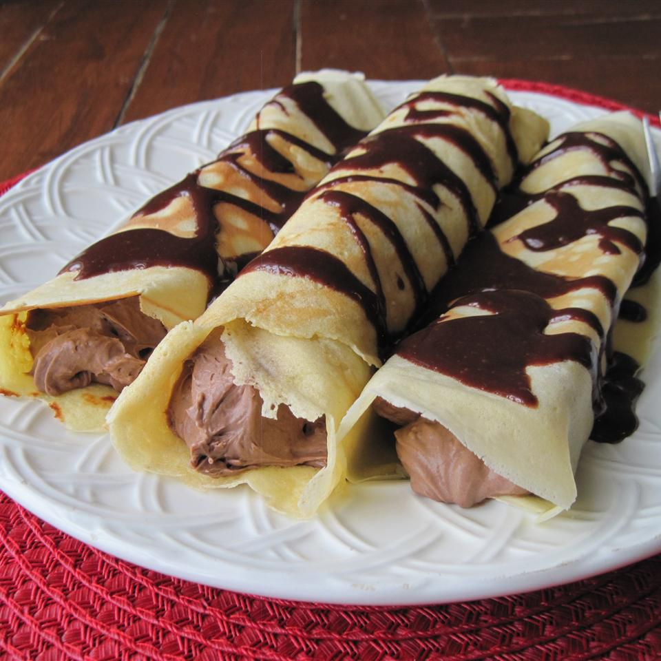

Chocolate Crepes

Description
Chocolate crepes can be made a few days ahead and assembled a few hours before serving. They're the perfect Valentine's Day surprise!
Ingredients
- 2 eggs
- ½ cup milk
- ½ cup water
- ¾ cup all-purpose flour
- 6 teaspoons white sugar
- ⅓ tablespoon butter or margarine
- 1 fluid ounce cognac
- 1 (3.9 ounce) package instant chocolate pudding mix
- 1 teaspoon instant coffee granules
- 3 cups heavy cream
- 4 (1 ounce) squares bittersweet chocolate
- ½ cup butter or margarine
- 1 ¼ cups nonfat evaporated milk
- 2 ½ cups confectioners' sugar